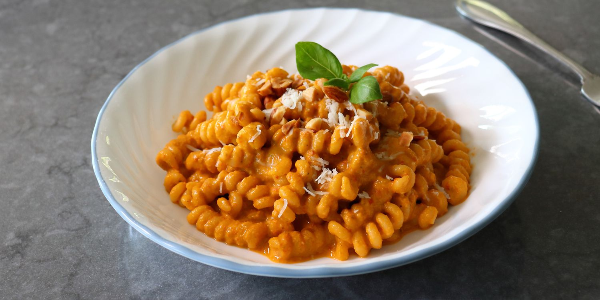

Pasta Alla Trapanese

Description
A Sicilian dish made with a tomato and almond pesto sauce.
Ingredients
- 1/2 cup whole roasted almonds
- 4 cloves garlic
- 1 teaspoon kosher salt, plus more to taste
- 1 cup grated pecorino Romano cheese, plus more to taste
- 1 cup packed fresh basil leaves
- 4 mint leaves (optional)
- 1/2 cup extra virgin olive oil
- 1 pound red cherry tomatoes or red grape tomatoes
-
1 pound busiate pasta, or other curly shaped pasta, such as fusilli
Steps
-
Bring about 2 cups of water to a boil, remove from the heat, and stir in
almonds; let sit for 3 to 4 minutes. Drain, and once cool enough to
handle, rub skins off with your hands; alternately; transfer drained
almonds to a kitchen towel, then fold up the towel and rub almonds until
skins come off.
-
Crush sliced garlic with kosher salt in a mortar and pestle into a
smooth paste. Alternately, place garlic on a board and sprinkle kosher
salt on top; use the flat side of the knife to flatten, mash, and scrape
the garlic and salt mixture until it is a smooth paste.
-
Add peeled almonds to the jar of a blender, followed by the cheese,
basil, mint, garlic paste, oil, and tomatoes. Add the ingredients in
this order, so that the almonds and cheese have a chance to grind before
the wetter ingredients mix in.
-
Begin to pulse blender on and off until almonds and cheese are ground,
then continue to pulse until remaining ingredients are incorporated.
Blend on high until the pesto is as coarse or smooth as you like.
- Taste for salt, and adjust. Set aside while pasta is cooking.
-
Bring a large pot of lightly salted water to a boil. Cook busiate pasta
in the boiling water, stirring occasionally, until tender yet firm to
the bite, about 12 minutes. Transfer pasta into a bowl with a strainer.
Reserve starchy cooking liquid.
-
Add about 1/3 cup of the pasta water into the bowl, and then transfer in
the pesto, along with a large pinch of salt, and toss to coat. More
pasta water can be added to adjust the texture. Once mixed, add another
optional handful of cheese, and toss one last time. Serve immediately.